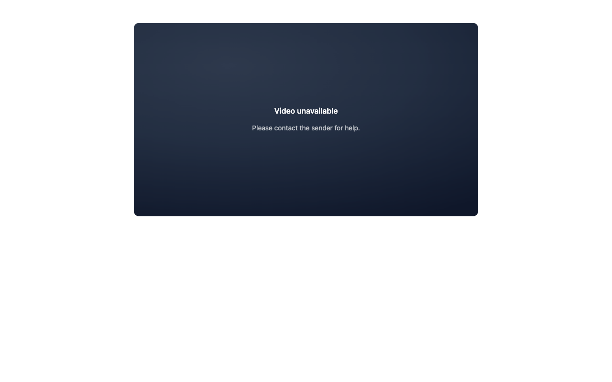
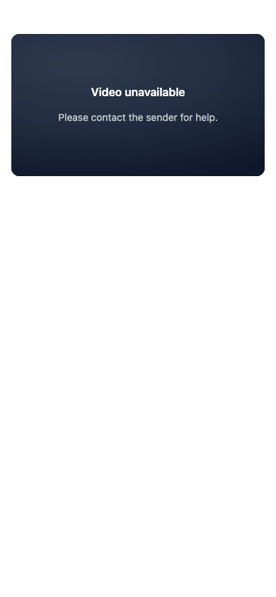
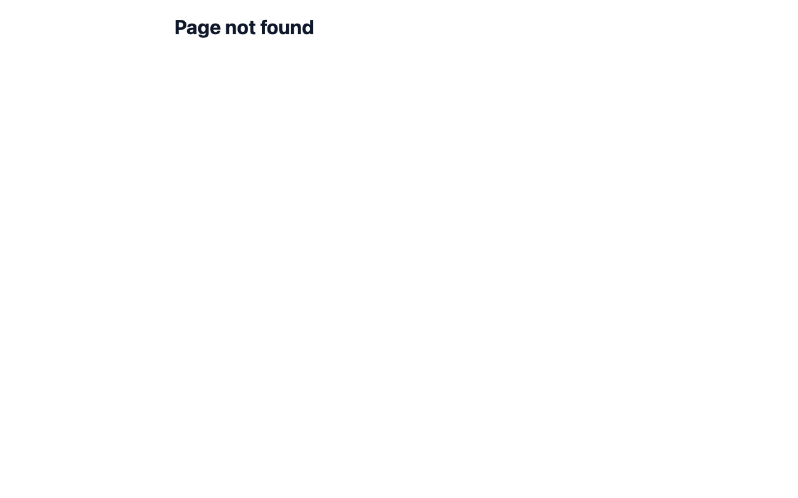

WIL-3494 PR 5 (#936), with William's rule of 2 October 2026. Screenshots are from staging, as a logged-out visitor, using test takes from the QA account.
| Share page | Today (main) | With PR 5 |
|---|---|---|
| Never edited by a rep | 200, "Video unavailable" card | 404, "Page not found"; its Library card, if any, is removed too |
| Edited by a rep (any save, generation, or only a password) | 200, "Video unavailable" card | 200, "Video unavailable" card, unchanged, card kept |
"Edited" means a rep's own write: every save, a page generation, or a password change marks the page. The server's own writes never do, including the rename when a recording stops. The check runs in the same database transaction as the delete. If an edit lands before the delete, the page stays. If the delete lands first, the edit is refused and the page stays retired.
The 221 production pages that migration 0031 linked to existing videos follow the same rule. As of 2 October 2026, 163 were never written after they were created, so they would be retired on delete; 55 of those carry a Library card from creation, which goes with them. The other 58 were changed by a rep after creation (saved, retitled, published, extended, one password), so they stay published. All 221 still read revision 1, because the revision counter only started on 30 September. Five of the 58 were last changed between 17 and 22 July, when two server jobs also touched pages, so they may not be real edits; keeping them is the safe side.
Turning the share link on or off is not an edit.
The link answers 200. The video block shows "Video unavailable. Please contact the sender for help." Anything the rep added to the page stays.


The link answers 404 with the site's plain "Page not found". The page is tombstoned, its route disabled and its publication removed.
